Средние узлы¶
Средних узлов: 797, по категориям. Варианты мастерств, которые предлагают некоторые из них, собраны в разделе «Мастерства».
resource costs¶
| Название | Ветвь | Эффект | |
|---|---|---|---|
| Движение | Сила и ловкость | 12.5% уменьшение расхода в движении |
Адреналин и тринкеты¶
| Название | Ветвь | Эффект | |
|---|---|---|---|
| Боевой запал | Интеллект и сила | +10% к получению адреналина +3.75 с задержки угасания адреналина при парировании недавно |
|
| Долгий шёпот оберега | Интеллект | 15% увеличение trinket duration | |
| Долго звучащий знак | Сила | 15% увеличение trinket duration | |
| Жар сечи | Интеллект | 30% увеличение урона при почти полном адреналине | |
| Знак старой веры | Ловкость и интеллект | 15% увеличение trinket effect | |
| На пике сечи | Интеллект и сила | 7.5% увеличение скорости атаки при почти полном адреналине | |
| Нарастающий азарт | Интеллект и сила | +20% к получению адреналина при последовательных попаданиях недавно | |
| Нестихший пыл | Интеллект и сила | +1.25 с задержки угасания адреналина | |
| Ответ на щите | Интеллект и сила | +20% к получению адреналина при блокировании недавно | |
| Память талисмана | Ловкость | 15% увеличение trinket duration | |
| Пульс викинга | Интеллект и сила | +15% к длительности эффекта тринкета 2.5% увеличение регенерации выносливости за каждые 10 единиц текущего адреналина |
|
| Сила узелка | Интеллект и сила | 15% увеличение trinket effect | |
| Узелок викинга | Сила и ловкость | 15% увеличение trinket effect |
Альтернативные атаки¶
| Название | Ветвь | Эффект | |
|---|---|---|---|
| Встреча клинков | Сила | 20% увеличение урона в ближнем бою атаками | |
| Другой конец клинка | Сила и ловкость | 15% увеличение скорости атаки альтернативной атаки при уклонении недавно 30% увеличение шанса критического удара альтернативной атаки |
|
| Замах дренга | Сила | 20% увеличение урона в ближнем бою атаками 10% увеличение области действия эффектов в ближнем бою атаками |
|
| Коронный удар | Интеллект и сила | 15% увеличение урона альтернативной атаки | |
| Размашистый ответ | Сила и ловкость | 7.5% увеличение скорости атаки альтернативной атаки 10% увеличение области действия эффектов альтернативной атаки |
|
| Роковой замах | Интеллект и сила | +25% урона критических ударов альтернативной атаки | |
| Стремительная сеча | Сила | 5% увеличение скорости атаки в ближнем бою 40% увеличение накопления недуга в ближнем бою |
|
| Толчок обуха | Сила и ловкость | 5% уменьшение расход выносливости альтернативной атаки 10% увеличение отбрасывания альтернативной атаки |
|
| Упрямый напор | Сила и ловкость | 7.5% уменьшение расход выносливости альтернативной атаки on primary attack hit недавно 60% увеличение накопления оглушения альтернативными атаками on primary attack hit недавно |
|
| Широкая сеча | Сила и ловкость | 7.5% увеличение скорости атаки альтернативной атаки 10% увеличение области действия эффектов альтернативной атаки 40% увеличение накопления оглушения альтернативными атаками |
Арбалеты¶
| Название | Ветвь | Эффект | |
|---|---|---|---|
| Болт в просвете | Сила и ловкость | 30% увеличение шанса критического удара арбалетов 10% увеличение скорости снарядов болтов 40% увеличение шанса критического удара арбалетов первым выстрелом из магазина |
|
| Болт дренга | Сила и ловкость | 20% увеличение урона арбалетов 10% увеличение скорости снарядов болтов +15 Ловкости |
|
| Быстрый ворот | Сила и ловкость | 10% увеличение скорости перезарядки арбалетов +15 Ловкости |
|
| Градобой | Сила и ловкость | +5% скорострельности арбалета | |
| Запас осадника | Сила и ловкость | 10% уменьшение расход выносливости арбалетов 25% увеличение урона арбалетов за каждый: тип болта, выпущенного за последние 10 секунд 5% увеличение урона арбалетов за каждую единицу выпущенный недавно болт |
|
| Натиск самострела | Сила и ловкость | 10% увеличение скорости перезарядки арбалетов 10% увеличение отбрасывания болтов |
|
| Осадный самострел | Сила и ловкость | 10% увеличение скорости перезарядки арбалетов 20% увеличение урона арбалетов |
|
| Приговор стрелка | Сила и ловкость | 30% увеличение шанса критического удара арбалетов +20% урона критических ударов арбалетов |
|
| Расколотый щит | Сила и ловкость | 10% увеличение отбрасывания болтов +1 заряжаемых болтов |
|
| Рука взводчика | Сила и ловкость | 20% увеличение скорости перезарядки арбалетов при уклонении недавно 10% уменьшение расход выносливости арбалетов 15% увеличение fire rate арбалетов при уклонении недавно |
|
| Стальной ритм | Сила и ловкость | +5% скорострельности арбалета | |
| Шаг отдачи | Сила и ловкость | 25% увеличение отбрасывания болтов при критическом попадании недавно +15 Ловкости Отдача арбалета отталкивает вас на короткий шаг прочь от точки прицела. |
|
| Шлем на вертеле | Сила и ловкость | +20% урона критических ударов арбалетов 10% увеличение отбрасывания болтов 40% увеличение урона критических ударов арбалетов последним заряженным выстрелом |
|
| Щелчок затвора | Сила и ловкость | 40% увеличение накопления недуга арбалетами 30% шанс мгновенной перезарядки арбалетами |
Атрибуты¶
| Название | Ветвь | Эффект | |
|---|---|---|---|
| Искра Всеотца | Интеллект | +15 Интеллекта | |
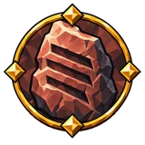 |
Корни горы | Сила | +15 Силы |
| Кость йотуна | Сила | +15 Силы | |
| Кровь исполинов | Сила | +15 Силы 10% увеличение Силы |
|
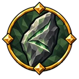 |
Лисья сноровка | Ловкость | +15 Ловкости 10% увеличение Ловкости |
| Мысль ворона | Интеллект | 10% увеличение Интеллекта | |
| Олений след | Ловкость и интеллект | +15 Ловкости | |
| Плечи дренга | Сила | +15 Силы | |
| Сердце великана | Сила | +15 Силы | |
| Стальная стать | Сила | 10% увеличение Силы | |
| Твёрдая рука | Ловкость и интеллект | 10% увеличение Ловкости |
Ауры¶
| Название | Ветвь | Эффект | |
|---|---|---|---|
| Грозное присутствие | Интеллект и сила | 15% увеличение aura урона | |
| Живое присутствие | Интеллект и сила | +10% к эффекту ауры 2.5% увеличение aura области действия эффектов за каждые 100 единиц максимума здоровья |
|
| Знамя над строем | Интеллект и сила | 10% увеличение aura области действия эффектов | |
| Круг знамени | Интеллект и сила | 10% увеличение aura области действия эффектов | |
| Сила под знаменем | Интеллект и сила | +10% к эффекту ауры | |
| След знамени | Интеллект и сила | +3 с действия ауры после выхода | |
| Эхо присутствия | Интеллект и сила | +3 с действия ауры после выхода |
Афтершоки¶
| Название | Ветвь | Эффект | |
|---|---|---|---|
| Второй толчок | Сила | 25% увеличение накопления оглушения with aftershocks | |
| Гул глубин | Сила | 2.5% увеличение aftershock области действия эффектов за каждые 100 единиц максимума здоровья | |
| Раскат разлома | Сила | 15% увеличение aftershock области действия эффектов при оглушении цели недавно | |
| Эхо под камнем | Сила | 10% увеличение aftershock области действия эффектов |
Башенные щиты¶
| Название | Ветвь | Эффект | |
|---|---|---|---|
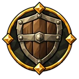 |
Бремя стража | Сила | 10% уменьшение tower shield расход выносливости при блокировании |
| Дубовый бастион | Сила | 15% увеличение tower shield силы блока | |
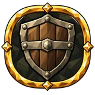 |
Стена дружины | Сила | 15% увеличение tower shield силы блока |
| Щит у пролома | Сила | 15% увеличение tower shield силы блока |
Бег¶
| Название | Ветвь | Эффект | |
|---|---|---|---|
| Неутомимость | Ловкость | 10% увеличение регенерации выносливости 5% уменьшение расход выносливости при беге |
|
| Размеренный шаг | Ловкость | 5% уменьшение расход выносливости при беге |
Ближний бой¶
| Название | Ветвь | Эффект | |
|---|---|---|---|
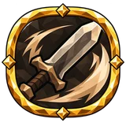 |
В гуще сечи | Сила | 30% увеличение шанса критического удара в ближнем бою 3% увеличение урона в ближнем бою за каждые 30 единиц "Сила" |
| Живой пульс | Сила | 10% уменьшение расход выносливости в ближнем бою атаками | |
| Низвергатель великанов | Сила | 15% увеличение урона в ближнем бою 30% увеличение урона в ближнем бою против оглушённых целей |
|
| Падение молота | Сила | 40% увеличение накопления оглушения 15% увеличение урона в ближнем бою +15 Силы |
|
| Удар плечом к плечу | Ловкость и интеллект | 20% увеличение урона в ближнем бою атаками 40% увеличение накопления оглушения в ближнем бою |
Блокирование¶
| Название | Ветвь | Эффект | |
|---|---|---|---|
| Поднятая защита | Ловкость | 22.5% увеличение силы блока с поднятым щитом | |
| След на щите | Сила | 10% уменьшение расход выносливости при блоке при получении удара недавно | |
| Стена щитов | Сила | 15% увеличение силы блока +20% устойчивости к оглушению |
|
| Страж у ворот | Сила | 22.5% увеличение силы блока стоя на месте 15% увеличение силы блока от экипированного: щита |
|
| Усталый щитоносец | Сила | 30% увеличение силы блока при низкой выносливости 10% уменьшение расход выносливости при блоке при низкой выносливости |
|
| Хват щитоносца | Интеллект и сила | 15% увеличение силы блока | |
| Щит после удара | Сила | 15% увеличение силы блока 5% уменьшение расход выносливости при блоке +5 здоровья при блокировании |
Бой¶
| Название | Ветвь | Эффект | |
|---|---|---|---|
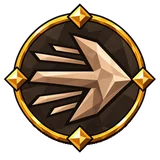 |
Вызов великому | Интеллект и сила | 20% увеличение урона против боссов |
| Конец вожака | Интеллект и сила | 20% увеличение урона против врагов с низким здоровьем 20% увеличение урона against rare or unique enemies |
|
| Оружие Севера | Сила и ловкость | 15% увеличение урона в ближнем бою 15% увеличение урона снарядов +8 Силы +8 Ловкости |
|
| Охота на вожака | Интеллект и сила | 20% увеличение урона against rare or unique enemies | |
| Ритм побоища | Интеллект и сила | 7.5% увеличение скорости атаки при оглушении цели недавно 5% увеличение скорости атаки |
|
| Ткач битвы | Ловкость и интеллект | +15% урона критических ударов 15% увеличение урона атак 5% увеличение скорости атаки 5% увеличение скорости каста +8 Интеллекта +8 Ловкости |
Бой двумя оружиями¶
| Название | Ветвь | Эффект | |
|---|---|---|---|
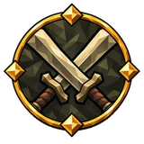 |
Два волчьих клыка | Ловкость и интеллект | 15% увеличение урона парного оружия 7.5% уменьшение расход выносливости парного оружия |
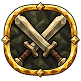 |
Две руки бури | Ловкость | 15% увеличение урона парного оружия 5% увеличение скорости атаки парного оружия |
| Парный приговор | Ловкость и интеллект | +20% урона критических ударов парного оружия | |
| Перекрёсток клинков | Ловкость и интеллект | 5% увеличение скорости атаки парного оружия 30% увеличение шанса критического удара парного оружия |
Бомбы¶
| Название | Ветвь | Эффект | |
|---|---|---|---|
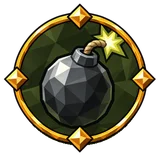 |
Бережный бросок | Ловкость и интеллект | 5% увеличение скорости атаки бомб 12.5% шанс сберечь бомбу при броске |
| Бережный подрывник | Ловкость и интеллект | 20% увеличение урона бомб 10% уменьшение расход выносливости бомб |
|
| Верный запал | Ловкость и интеллект | 30% увеличение шанса критического удара бомб +20% урона критических ударов бомб |
|
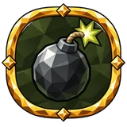 |
Грохот налётчика | Ловкость и интеллект | 12.5% увеличение радиуса взрыва 20% увеличение урона бомб |
| Двойной раскат | Ловкость и интеллект | +10% второго взрыва | |
| Едкий фитиль | Ловкость и интеллект | 40% увеличение накопления недуга бомбами +1 отскоков |
|
| Запасной запал | Ловкость и интеллект | 12.5% шанс сберечь бомбу при броске | |
| Искра запала | Ловкость и интеллект | 30% увеличение шанса критического удара бомб 10% увеличение скорости снарядов бомб |
|
| Осколочная рана | Ловкость и интеллект | 40% увеличение накопления недуга бомбами 5% увеличение скорости атаки бомб |
|
| Порох под ногами | Ловкость и интеллект | 20% увеличение урона бомб | |
| Роковой осколок | Ловкость и интеллект | +20% урона критических ударов бомб | |
| Рука подрывника | Ловкость и интеллект | 5% увеличение скорости атаки бомб 10% уменьшение расход выносливости бомб |
Броня¶
| Название | Ветвь | Эффект | |
|---|---|---|---|
| Броня старого дренга | Интеллект и сила | 15% увеличение брони | |
| Железная кожа | Сила и ловкость | 15% увеличение брони +5 брони |
|
| Железный венец | Сила | 15% увеличение брони 10% увеличение брони от экипированного: шлема |
|
| Закалённая защита | Сила | 5% увеличение эффективности брони | |
| Закалённая защита | Интеллект и сила | 5% увеличение эффективности брони | |
| Кираса дружинника | Сила | 15% увеличение брони 10% увеличение брони от экипированного: нагрудника |
|
| Кованое сердце | Сила | 15% увеличение брони | |
| Кованый хауберк | Сила | 10% увеличение брони от экипированного: нагрудника | |
| Несгибаемый дуб | Сила и ловкость | 15% увеличение брони +10% устойчивости к оглушению |
|
| Облегчённая ковка | Сила | +15% лёгкости снаряжения 60% увеличение брони от экипированного: нагрудника при получении удара недавно +15% лёгкости снаряжения за каждые 100 единиц текущей брони |
|
| Память наковальни | Сила и ловкость | 15% увеличение брони | |
| Поножи дренга | Сила и ловкость | 30% увеличение брони при получении удара недавно 10% увеличение брони от экипированного: поножей |
|
| Руна под сталью | Интеллект и сила | 15% увеличение брони +20 рунного щита |
|
| Шлем старой стражи | Интеллект и сила | 15% увеличение брони 10% увеличение брони от экипированного: шлема |
Броня и рунный щит¶
| Название | Ветвь | Эффект | |
|---|---|---|---|
| Броня и рунный щит | Интеллект и сила | 15% увеличение брони 12.5% увеличение рунного щита |
|
| Кованое начертание | Интеллект и сила | 10% увеличение брони от экипированного: нагрудника 12.5% увеличение рунного щита от экипированного: нагрудника |
|
| Рунокованая эгида | Интеллект и сила | 15% увеличение брони 12.5% увеличение рунного щита 12.5% увеличение максимума эйтра +8 Интеллекта +8 Силы |
Броня и уклонение¶
| Название | Ветвь | Эффект | |
|---|---|---|---|
| Гибкая ковка | Сила и ловкость | 15% увеличение брони 7.5% увеличение рейтинга уклонения |
|
| Кольчуга странника | Сила и ловкость | 10% увеличение брони от экипированного: нагрудника 22.5% увеличение рейтинга уклонения от экипированного: нагрудника |
|
| Кольчуга хускарла | Сила и ловкость | 15% увеличение брони 7.5% увеличение рейтинга уклонения +8 Силы +8 Ловкости |
В воздухе¶
| Название | Ветвь | Эффект | |
|---|---|---|---|
| Вес падающего камня | Ловкость | 120% увеличение накопления оглушения в воздухе | |
| Вольное небо | Ловкость и интеллект | −30% к длительности недугов на себе от основы в воздухе | |
| Небесный напор | Ловкость | 30% увеличение отбрасывания в воздухе | |
| Сеча над землёй | Интеллект | 60% увеличение урона в воздухе 30% уменьшение расхода в воздухе |
|
| Сила над землёй | Интеллект | 60% увеличение регенерации эйтра в воздухе +1 числа снарядов при выстреле или броске в воздухе |
Влажность¶
| Название | Ветвь | Эффект | |
|---|---|---|---|
| Дождь до костей | Ловкость и интеллект | +25% к эффекту накладываемой влажности | |
| Руны под дождём | Интеллект и сила | 30% увеличение регенерации эйтра промокшим |
Выносливость¶
| Название | Ветвь | Эффект | |
|---|---|---|---|
| Каменное дыхание | Сила | 10% увеличение регенерации выносливости | |
| Лосиное сердце | Ловкость | 12.5% увеличение максимума выносливости 10% увеличение регенерации выносливости |
|
| Лёгкий отрыв | Сила и ловкость | 5% уменьшение расход выносливости в прыжке | |
| На последнем вдохе | Сила | +20% устойчивости к оглушению при низкой выносливости | |
| Новое дыхание | Сила и ловкость | +20 выносливости при убийстве | |
| Олений манёвр | Ловкость | 15% увеличение рейтинга уклонения при низкой выносливости | |
| Прилив сил | Ловкость | +12.5 выносливости при критическом попадании | |
| Путь до перевала | Сила и ловкость | 12.5% увеличение максимума выносливости 10% увеличение регенерации выносливости |
|
| Ровное дыхание | Интеллект и сила | 10% увеличение регенерации выносливости | |
| Свежий ветер | Ловкость и интеллект | 10% увеличение регенерации выносливости | |
| Тихое дыхание | Интеллект | 10% увеличение регенерации выносливости | |
| Усталый страж | Сила | +10% шанса скользящего удара при низкой выносливости |
Горящая земля¶
| Название | Ветвь | Эффект | |
|---|---|---|---|
| Пепельный след | Интеллект | 20% увеличение урона от огня эффектами земли 10% увеличение области действия эффектов от огня эффектами земли 30% увеличение регенерации эйтра на горящей земле Заклинания создают землю при попадании в поверхность при нанесении урона типа «огонь» |
Двуручное оружие¶
| Название | Ветвь | Эффект | |
|---|---|---|---|
| Вес двуручника | Сила | 40% увеличение накопления оглушения двуручным оружием | |
| Взгляд рубаки | Интеллект и сила | 30% увеличение шанса критического удара двуручного оружия | |
| Гул тяжёлой стали | Интеллект и сила | 15% увеличение урона двуручного оружия в ближнем бою 15% увеличение области действия эффектов при оглушении цели двуручным оружием ближнего боя недавно +15 Силы |
|
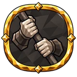 |
Две верные руки | Сила | 10% уменьшение расход выносливости двуручного оружия атаками +15 Силы |
| Ответ дренга | Сила | 30% увеличение урона двуручного оружия в ближнем бою при блокировании недавно | |
| Размах исполина | Интеллект и сила | 15% увеличение урона двуручного оружия в ближнем бою 10% увеличение области действия эффектов двуручного оружия в ближнем бою +15 Силы |
|
| Удар до кости | Интеллект и сила | +20% урона критических ударов двуручного оружия | |
| Хват исполина | Сила | 15% увеличение урона двуручного оружия 5% увеличение скорости атаки двуручного оружия |
Длительность эффектов¶
| Название | Ветвь | Эффект | |
|---|---|---|---|
| Долгий отголосок | Ловкость и интеллект | 20% увеличение длительности недугов и усилений | |
| Мимолётность | Интеллект | ×0.85 длительности эффектов | |
| Неугасающее эхо | Интеллект | 20% увеличение длительности эффектов | |
| Продлённое благословение | Ловкость и интеллект | 15% увеличение длительности собственных усилений | |
| Стойкая решимость | Интеллект и сила | 20% увеличение длительности эффектов +10% устойчивости к оглушению |
Длительный урон¶
| Название | Ветвь | Эффект | |
|---|---|---|---|
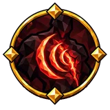 |
Медленная погибель | Интеллект | +5% к множителю длительного урона |
| Неумолимый распад | Сила | +5% к множителю длительного урона |
Древковое оружие¶
| Название | Ветвь | Эффект | |
|---|---|---|---|
| Вихрь глейфы | Интеллект и сила | 10% увеличение области действия эффектов древкового оружия 5% увеличение скорости атаки древкового оружия |
|
| Длинная сталь | Интеллект и сила | 40% увеличение урона древкового оружия | |
| Зуб драугра | Интеллект и сила | 40% увеличение урона древкового оружия 40% увеличение накопления прокола древковым оружием |
|
| Круг алебарды | Интеллект и сила | 5% увеличение скорости атаки древкового оружия | |
| Лезвие на вылете | Интеллект и сила | +20% урона критических ударов древкового оружия | |
| Острие дозора | Интеллект и сила | 30% увеличение шанса критического удара древкового оружия | |
| Пляска древка | Интеллект и сила | 5% увеличение скорости атаки древкового оружия | |
| Рваный размах | Интеллект и сила | 40% увеличение накопления оглушения древковым оружием | |
| Страж прохода | Интеллект и сила | 30% увеличение шанса критического удара древкового оружия +20% урона критических ударов древкового оружия |
|
| Хват древка | Интеллект и сила | 10% уменьшение расход выносливости древкового оружия | |
| Шип глейфы | Интеллект и сила | 10% уменьшение расход выносливости древкового оружия атаками 10% увеличение урона прокола древковым оружием |
Дробящий урон¶
| Название | Ветвь | Эффект | |
|---|---|---|---|
| Вес встречного удара | Сила и ловкость | 40% увеличение дробящего урона атаками при блокировании недавно | |
| Вес кузни | Сила и ловкость | 40% увеличение накопления разрушения брони при нанесении урона типа «дробящий» | |
| Звон костей | Сила | 15% увеличение дробящего урона 40% увеличение накопления оглушения |
|
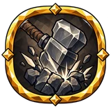 |
Колючая ковка | Сила и ловкость | 20% увеличение дробящего урона атаками |
| Кость под железом | Сила | 30% увеличение дробящего урона при блокировании недавно 80% увеличение накопления разрушения брони при блокировании недавно |
|
| Масса приговора | Сила и ловкость | 10% увеличение дробящего отбрасывания | |
| Песнь обуха | Сила | 15% увеличение дробящего урона | |
| Сломанный панцирь | Сила | 40% увеличение накопления разрушения брони | |
| Сталь до кости | Сила и ловкость | 20% увеличение дробящего урона атаками |
Дубины¶
| Название | Ветвь | Эффект | |
|---|---|---|---|
| Висок врага | Сила | 30% увеличение шанса критического удара дубин +20% урона критических ударов дубин |
|
| Гнев дуба | Сила | 12.5% увеличение урона дубин 15% увеличение области действия эффектов дубин при оглушении цели дубинами недавно 10% увеличение отбрасывания дубин |
|
| Кувалда дренга | Сила | 25% увеличение урона дубин при блокировании недавно 40% увеличение накопления оглушения дубинами |
|
| Меткий обух | Сила | 30% увеличение шанса критического удара дубин | |
| Размах дубравы | Сила | 5% увеличение скорости атаки дубин | |
| Синяк великана | Сила | 40% увеличение накопления оглушения дубинами | |
| Сучок тролля | Сила | 12.5% увеличение урона дубин 5% увеличение скорости атаки дубин 10% уменьшение расход выносливости дубин |
|
| Тяжёлое отталкивание | Сила | 10% уменьшение расход выносливости дубин | |
| Череп под молотом | Сила | +20% урона критических ударов дубин |
Еда¶
| Название | Ветвь | Эффект | |
|---|---|---|---|
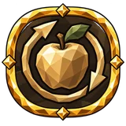 |
Глоток к трапезе | Сила и ловкость | 20% увеличение сытности еды выносливости |
| Дорожная трапеза | Сила и ловкость | 20% увеличение сытности еды выносливости 15% увеличение food duration 12.5% увеличение регенерации выносливости если сыт |
|
| Запасы болотного похода | Сила и ловкость | 15% увеличение food duration +9.375% resistance от яда если сыт |
|
| Крепкая трапеза | Сила и ловкость | 20% увеличение сытности еды здоровья +9.375% resistance от стихий если сыт 2.5% увеличение физического урона за каждые 15 единиц здоровья от еды |
|
| Мудрость трапезы | Сила и ловкость | 12.5% увеличение регенерации выносливости если сыт 0.5% увеличение скорости атаки за каждые 30 единиц выносливости от еды |
|
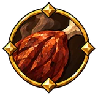 |
Пир руноведа | Интеллект | 20% увеличение сытности еды эйтра 25% увеличение регенерации эйтра если сыт |
| Пища долгой жизни | Сила и ловкость | 20% увеличение сытности еды здоровья 15% увеличение food duration 18.75% увеличение регенерации здоровья если сыт |
|
| Руна за трапезой | Интеллект и сила | 15.625% увеличение рунного щита если сыт | |
| Сила в пути | Ловкость и интеллект | 20% увеличение сытности еды эйтра +1.25 рунного щита за каждые 50 единиц эйтра от еды 2.5% увеличение урона от яда за каждые 15 единиц эйтра от еды |
|
| Сытая стойкость | Сила и ловкость | 20% увеличение сытности еды здоровья |
Заклинания¶
| Название | Ветвь | Эффект | |
|---|---|---|---|
| Бережное слово | Интеллект | 10% уменьшение расход выносливости и эйтра посохов стихий | |
| Быстрое слово | Интеллект | 7.5% увеличение скорости каста чар при полном рунном щите | |
| Зигзаг руны | Интеллект | 25% увеличение скорости снарядов чар снарядами при критическом попадании недавно +1 projectile chain чар снарядами |
|
| Круг волхва | Интеллект | 15% увеличение урона чар по области | |
| Могущество знака | Интеллект | 20% увеличение урона посохов стихий | |
| Напев сейда | Интеллект | 15% увеличение урона чар +15 Интеллекта 12.5% увеличение максимума эйтра |
|
| Размах заклинателя | Интеллект | 10% увеличение области действия эффектов чар 5% увеличение скорости каста чар |
|
| Связное заклятье | Интеллект | 5% увеличение скорости каста чар 5% уменьшение расход выносливости и эйтра колдовства |
|
| Слияние сейда | Интеллект и сила | 30% увеличение шанса критического удара 10% увеличение области действия эффектов 15% увеличение урона чар +8 Силы +8 Интеллекта |
|
| Стрела руноведа | Интеллект | 10% увеличение скорости снарядов чар снарядами 15% увеличение урона чар снарядами |
|
| Точность чародея | Интеллект | 30% увеличение шанса критического удара посохов стихий +20% урона критических ударов посохов стихий |
|
| Широкое начертание | Интеллект | 10% увеличение области действия эффектов чар | |
| Шёпот над рунами | Интеллект | 5% увеличение скорости каста |
Заряженная земля¶
| Название | Ветвь | Эффект | |
|---|---|---|---|
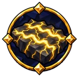 |
Ложе бури | Интеллект | 10% увеличение области действия эффектов от молнии эффектами земли 7.5% увеличение скорости каста на заряженной земле Заклинания создают землю при попадании в поверхность при нанесении урона типа «молния» |
Заряженные атаки¶
| Название | Ветвь | Эффект | |
|---|---|---|---|
| Круг тяжёлого удара | Сила и ловкость | 20% увеличение области действия эффектов заряженной атаки 80% увеличение накопления недуга заряженными атаками |
|
| Накопленная ярость | Сила и ловкость | 80% увеличение накопления оглушения заряженными атаками 30% увеличение урона заряженной атаки |
|
| Прыжок перед ударом | Сила и ловкость | 10% уменьшение расход выносливости заряженной атаки Заряжает следующую атаку при прыжке Прыжок заряжает следующую атаку. Заряженная атака сохраняет тип оружия и может взаимодействовать с эффектами заряженных атак. Перезарядка 2 с. |
|
| Разбег исполина | Сила | 10% увеличение скорости передвижения при низком здоровье Достаточно долгий бег заряжает следующую атаку. Перезарядка 2 с. |
|
| Разряд кулака | Сила и ловкость | 10% уменьшение расход выносливости заряженной атаки Наносит ближайшим врагам 30% урона попадания заряженными атаками |
|
| Решающий замах | Сила и ловкость | 30% увеличение урона заряженной атаки 60% увеличение шанса критического удара заряженной атаки |
|
| Сила перед бурей | Сила и ловкость | 120% увеличение накопления оглушения заряженными атаками on primary attack hit недавно | |
| Тяжёлое ожидание | Сила и ловкость | 80% увеличение накопления оглушения заряженными атаками | |
| Удержанная мощь | Сила и ловкость | 60% увеличение урона заряженной атаки при блокировании недавно |
Здоровье¶
| Название | Ветвь | Эффект | |
|---|---|---|---|
| Бодрое сердце | Интеллект и сила | 15% увеличение регенерации здоровья 20% увеличение урона |
|
| Глоток жизни | Интеллект и сила | +10 здоровья при убийстве +0.5% вампиризма против врагов с низким здоровьем |
|
| Живой пульс | Интеллект и сила | +15% частоты тиков регенерации здоровья | |
| Живучий корень | Сила | 15% увеличение регенерации здоровья | |
| Жизнь в кулаке | Ловкость | Восстанавливает 0.025% недостающего здоровья заряженными атаками при попадании | |
| Жизнь на острие | Интеллект | 2.5% увеличение урона за каждые 10 единиц % недостающего здоровья | |
| Жила под железом | Интеллект и сила | 15% увеличение регенерации здоровья | |
| Кровь викинга | Сила | +20 максимума здоровья | |
| Кровь долгого пути | Сила | 7.5% увеличение максимума здоровья | |
| Кровь под кольчугой | Сила | 7.5% увеличение максимума здоровья | |
| Оленья стать | Сила и ловкость | 7.5% увеличение максимума здоровья | |
| Очаг и пёс | Сила и ловкость | 15% увеличение регенерации здоровья 22.5% увеличение регенерации здоровья пока питомец сыт |
|
| Последний заслон | Интеллект и сила | 30% увеличение силы блока при низком здоровье | |
| Сердце странника | Ловкость | 7.5% увеличение максимума здоровья | |
| Тёплая жила | Сила | +0.75 регенерации здоровья |
Здоровье и броня¶
| Название | Ветвь | Эффект | |
|---|---|---|---|
| Железная кровь | Сила | 15% увеличение регенерации здоровья +5 брони +15 Силы |
|
| Жизнь под шлемом | Сила и ловкость | 7.5% увеличение максимума здоровья +1.25 максимума здоровья за каждую единицу брони надетого шлема |
|
| Закалка шрамами | Интеллект и сила | 30% увеличение брони при получении удара недавно | |
| Плоть и сталь | Интеллект и сила | +1.25 максимума здоровья за каждые 100 единиц текущей брони |
Здоровье и рунный щит¶
| Название | Ветвь | Эффект | |
|---|---|---|---|
| Кровь внутри круга | Интеллект и сила | 7.5% увеличение максимума здоровья 12.5% увеличение рунного щита |
|
| Руна живой крови | Ловкость и интеллект | −12.5% к паузе перед перезарядкой рунного щита |
Здоровье и стамина¶
| Название | Ветвь | Эффект | |
|---|---|---|---|
| Волчье дыхание | Сила | 10% увеличение регенерации выносливости |
Исцеление¶
| Название | Ветвь | Эффект | |
|---|---|---|---|
| Дар целителя | Интеллект и сила | +15% к эффекту лечения | |
| Круг милосердия | Интеллект и сила | 10% увеличение healing области действия эффектов | |
| Ладонь Эйр | Интеллект и сила | +15% к эффекту лечения | |
| Тепло в жилах | Интеллект и сила | +15% к эффекту лечения | |
| Целебный глоток | Интеллект и сила | +22.5% к эффекту лечения on drinking a mead недавно |
Кирки¶
| Название | Ветвь | Эффект | |
|---|---|---|---|
| Железный клюв | Сила | 20% увеличение урона кирок 5% увеличение скорости атаки кирок |
|
| Каменный зуб | Сила | 20% увеличение урона кирок 5% увеличение скорости атаки кирок |
|
| Острие под шлемом | Сила | 30% увеличение шанса критического удара кирок +20% урона критических ударов кирок |
|
| Песнь забоя | Сила | 12.5% увеличение скорости атаки кирок при критическом попадании недавно 30% увеличение шанса критического удара кирок |
|
| Раскол черепа | Сила | 20% увеличение урона кирок +20% урона критических ударов кирок |
|
| Трещина жилы | Сила | 40% увеличение накопления оглушения кирками | |
| Упрямый рудокоп | Сила | 10% уменьшение расход выносливости кирок | |
| Широкий раскол | Сила | 10% уменьшение расход выносливости кирок 40% увеличение накопления оглушения кирками |
Колчаны¶
| Название | Ветвь | Эффект | |
|---|---|---|---|
| Колчан следопыта | Ловкость | 15% увеличение quiver affix effect | |
| Рука оперителя | Ловкость | 37.5% увеличение quiver affix effect при критическом попадании недавно |
Кольца¶
| Название | Ветвь | Эффект | |
|---|---|---|---|
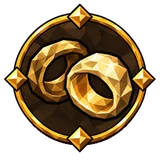 |
Ещё одно кольцо | Интеллект | +1 слотов экипировки для колец |
| Ещё одно кольцо | Интеллект и сила | +1 слотов экипировки для колец | |
| Ещё одно кольцо | Ловкость и интеллект | +1 слотов экипировки для колец | |
| Ещё одно кольцо | Интеллект | +1 слотов экипировки для колец | |
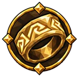 |
Полированные кольца | Интеллект | 8% увеличение ring affix values |
| Полированные кольца | Интеллект и сила | 8% увеличение ring affix values | |
| Полированные кольца | Ловкость и интеллект | 8% увеличение ring affix values | |
| Полированные кольца | Интеллект | 8% увеличение ring affix values |
Колющий урон¶
| Название | Ветвь | Эффект | |
|---|---|---|---|
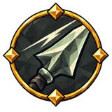 |
Зуб стали | Ловкость | 15% увеличение колющего урона 40% увеличение накопления прокола |
Комфорт и отдых¶
| Название | Ветвь | Эффект | |
|---|---|---|---|
| Бодрость очага | Сила и ловкость | 0.5% увеличение скорости атаки за каждые 10 единиц комфорт | |
| Вечер у камина | Интеллект и сила | 15% увеличение Rested duration 17.5% увеличение регенерации выносливости если отдохнул |
|
| Глоток перед сном | Интеллект и сила | 22.5% увеличение Rested duration on drinking a mead недавно 2.5% увеличение регенерации выносливости за каждую единицу заряда бодрости |
|
| Долгий отдых | Интеллект и сила | 15% увеличение Rested duration | |
| Живой очаг | Интеллект и сила | 2.5% увеличение регенерации выносливости за каждые 10 единиц комфорт | |
| Крепость домашнего тепла | Интеллект и сила | 12.5% увеличение Rested effect 2.5% увеличение брони за каждые 10 единиц заряда бодрости |
|
| Мир за частоколом | Сила и ловкость | 2.5% увеличение регенерации здоровья за каждые 10 единиц комфорт | |
| Мягкая шкура | Сила и ловкость | +2.5 уровня комфорта 1.875% увеличение рейтинга уклонения за каждые 10 единиц комфорт |
|
| Отдых под сводами | Сила и ловкость | 1.875% увеличение рейтинга уклонения за каждые 10 единиц комфорт | |
| Родные стены | Ловкость | +2.5 уровня комфорта 2.5% увеличение урона за каждые 10 единиц комфорт |
|
| Руна у ложа | Интеллект | +35 рунного щита если отдохнул | |
| Руны после сна | Интеллект и сила | 15% увеличение Rested duration 2.5% увеличение восстановления рунного щита за каждую единицу заряда бодрости 2.5% увеличение восстановления рунного щита за каждые 10 единиц комфорт |
|
| Силы за порогом | Сила и ловкость | 0.5% увеличение скорости атаки за каждые 10 единиц комфорт | |
| Силы у очага | Интеллект и сила | 2.5% увеличение урона за каждую единицу заряда бодрости | |
| Сон руноведа | Интеллект и сила | 15% увеличение Rested duration 2.5% увеличение регенерации эйтра за каждую единицу заряда бодрости |
|
| Тепло родного крова | Сила и ловкость | 1.875% увеличение рейтинга уклонения за каждые 10 единиц комфорт | |
| Тихий круг очага | Сила и ловкость | 2.5% увеличение регенерации выносливости за каждые 10 единиц комфорт | |
| Угли до рассвета | Ловкость | 35% увеличение урона если отдохнул | |
| Целебный покой | Интеллект и сила | 2.5% увеличение регенерации здоровья за каждые 10 единиц комфорт | |
| Чистота домашнего крова | Сила и ловкость | −2.5% к длительности недугов на себе от основы за каждые 10 единиц комфорт |
Копья¶
| Название | Ветвь | Эффект | |
|---|---|---|---|
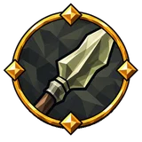 |
Взгляд копейщика | Сила и ловкость | 30% увеличение шанса критического удара копий +20% урона критических ударов копий |
| Волчий выпад | Сила и ловкость | 20% увеличение урона копий 30% увеличение шанса критического удара копий |
|
| Зуб охотника | Сила и ловкость | 40% увеличение накопления недуга копьями | |
| Копьё рассвета | Сила и ловкость | 20% увеличение урона копий 10% увеличение скорости снарядов копий |
|
| Лёгкое древко | Сила и ловкость | 5% увеличение скорости атаки копий 10% уменьшение расход выносливости копий |
|
| Острие вепря | Сила и ловкость | +20% урона критических ударов копий 40% увеличение накопления прокола копьями |
|
| Рана под ребром | Сила и ловкость | 10% увеличение урона прокола копьями | |
| Хват следопыта | Сила и ловкость | 5% увеличение скорости атаки копий 10% уменьшение расход выносливости копий |
Критические удары¶
| Название | Ветвь | Эффект | |
|---|---|---|---|
| Верная зарубка | Сила | 30% увеличение шанса критического удара +15% урона критических ударов |
|
| Взгляд волка | Интеллект | 30% увеличение шанса критического удара +15% урона критических ударов |
|
| Глаз воина | Ловкость и интеллект | 30% увеличение шанса критического удара | |
| Жребий сечи | Сила и ловкость | 30% увеличение шанса критического удара +15% урона критических ударов |
|
| Лебединая песнь | Ловкость и интеллект | 30% увеличение шанса критического удара против врагов с низким здоровьем +25% урона критических ударов против врагов с низким здоровьем |
|
| На острие победы | Интеллект | 120% увеличение шанса критического удара при убийстве недавно +15% урона критических ударов |
|
| Око Одина | Ловкость и интеллект | 30% увеличение шанса критического удара | |
| Острие горизонта | Ловкость и интеллект | 30% увеличение шанса критического удара снарядов против дальних врагов +15% урона критических ударов снарядов против дальних врагов |
|
| Острое чутьё | Интеллект и сила | +15% урона критических ударов 30% увеличение шанса критического удара |
|
| Охотничье чутьё | Ловкость | 30% увеличение шанса критического удара +15% урона критических ударов |
|
| Первый шрам | Ловкость и интеллект | 30% увеличение шанса критического удара против врагов с полным здоровьем +25% урона критических ударов против врагов с полным здоровьем |
|
| Прицел судьбы | Ловкость | 30% увеличение шанса критического удара +15% урона критических ударов |
|
| Просвет руны | Интеллект | 30% увеличение шанса критического удара чар | |
| Риск охотника | Ловкость | 150% увеличение шанса критического удара Критические удары не получают прибавки к урону: множитель остаётся 150% |
|
| Роковая грань | Сила | +15% урона критических ударов | |
| Роковое начертание | Интеллект | +20% урона критических ударов чар | |
| Слабое звено | Интеллект и сила | 30% увеличение шанса критического удара +15% урона критических ударов |
|
| Ставка палача | Ловкость | 15% уменьшение шанса критического удара 25% увеличение урона критических ударов |
|
| Тяжесть приговора | Ловкость и интеллект | +15% урона критических ударов |
Кровотечение¶
| Название | Ветвь | Эффект | |
|---|---|---|---|
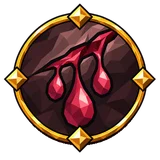 |
Алый ручей | Сила и ловкость | 40% увеличение накопления кровотечения 60% увеличение урона кровотечения при парировании недавно |
| Взгляд на рану | Ловкость | 30% увеличение шанса критического удара против кровоточащих врагов | |
| Кровавый след беглеца | Сила и ловкость | 15% увеличение длительности кровотечения против движущихся целей 10% увеличение урона кровотечения против движущихся целей |
|
| Незаживающая рана | Сила и ловкость | +5% физического damage over time multiplier 20% увеличение урона кровотечения |
|
| Незаживающий след | Сила и ловкость | 10% увеличение длительности кровотечения | |
| Охота по крови | Сила и ловкость | 20% увеличение урона против кровоточащих врагов | |
| Последние капли | Сила и ловкость | 10% увеличение урона кровотечения против врагов с низким здоровьем | |
| Свежий надрез | Сила и ловкость | 120% увеличение накопления кровотечения при парировании недавно | |
| След багряной нити | Сила и ловкость | 40% увеличение накопления кровотечения | |
| Смертельная рана | Сила и ловкость | +5% физического damage over time multiplier | |
| Шанс вызвать кровотечение | Сила и ловкость | 40% увеличение накопления кровотечения против кровоточащих врагов |
Кувырки¶
| Название | Ветвь | Эффект | |
|---|---|---|---|
| Перекат следопыта | Ловкость | 12.5% увеличение скорости уворота 5% уменьшение расход выносливости уклонения |
|
| Танцующий с ветром | Ловкость | 7.5% увеличение рейтинга уклонения 12.5% увеличение скорости уворота 5% уменьшение расход выносливости уклонения |
Кулаки¶
| Название | Ветвь | Эффект | |
|---|---|---|---|
| Волчья хватка | Ловкость | 30% увеличение шанса критического удара кулаков 30% увеличение урона скрытных атак кулаков |
|
| Голые кости | Ловкость | 30% увеличение шанса критического удара кулаков +20% урона критических ударов кулаков |
|
| Дыхание кулачника | Ловкость | 10% уменьшение расход выносливости кулаков | |
| Коготь фенринга | Ловкость | 30% увеличение шанса критического удара кулаков +20% урона критических ударов кулаков |
|
| Костяшки охотника | Ловкость | 30% увеличение шанса критического удара кулаков | |
| Кулак тролля | Ловкость | 20% увеличение урона кулаков 40% увеличение накопления оглушения кулаками +15 Силы |
|
| Печать кулака | Ловкость | 40% увеличение накопления оглушения кулаками | |
| Пляска костяшек | Ловкость | 5% увеличение скорости атаки кулаков 40% увеличение накопления оглушения кулаками |
|
| Ритм кулаков | Ловкость | 5% увеличение скорости атаки кулаков 10% уменьшение расход выносливости кулаков |
|
| Удар великана | Ловкость | 30% увеличение шанса критического удара кулаков 20% увеличение урона без оружия |
Ледяные кристаллы¶
| Название | Ветвь | Эффект | |
|---|---|---|---|
| Ледяное наследие | Интеллект | +2 ice crystal предела Враг, убитый вашим уроном холодом, оставляет ледяной кристалл там, где упал. |
|
| Осколки зимы | Ловкость | +2 ice crystal предела Заморозка врага выращивает рядом с ним ледяной кристалл. |
Лимиты умений¶
| Название | Ветвь | Эффект | |
|---|---|---|---|
| Вместимость знака | Интеллект | +2 предела |
Ловушки¶
| Название | Ветвь | Эффект | |
|---|---|---|---|
| Рука зверолова | Ловкость и интеллект | +20% урона критических ударов ловушек 5% увеличение скорости атаки ловушек |
|
| Стальной капкан | Ловкость и интеллект | 30% увеличение шанса критического удара ловушек 40% увеличение накопления оглушения минами и ловушками |
|
| Яма охотника | Ловкость и интеллект | 20% увеличение урона ловушек |
Луки¶
| Название | Ветвь | Эффект | |
|---|---|---|---|
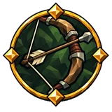 |
В упор | Ловкость | 12% увеличение shooting effective range |
| Верный выстрел | Ловкость | 12% увеличение shooting effective range | |
| Взгляд сквозь туман | Ловкость | 10% увеличение точности выстрела луков 30% увеличение шанса критического удара луков |
|
| Вороний глаз | Ловкость | 10% увеличение точности выстрела 35% увеличение урона луков |
|
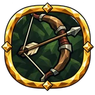 |
Гнущийся ясень | Ловкость | 10% увеличение скорости натяжения луков 5% уменьшение расход выносливости натяжения лука |
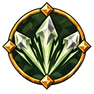 |
Дальний перелёт | Ловкость | 20% увеличение arrow and bolt range +20% additional projectile chance луков 10% увеличение shooting effective range |
| Две зарубки | Ловкость | 10% увеличение точности выстрела +20% additional projectile chance луков |
|
| Крепкая тетива | Ловкость | 35% увеличение урона луков 10% увеличение скорости натяжения луков 10% уменьшение расход выносливости луков |
|
| Лук скитальца | Ловкость | 35% увеличение урона луков 10% уменьшение расход выносливости луков |
|
| Наконечник охотника | Ловкость | 40% увеличение накопления недуга луками | |
| Натяжение Улля | Ловкость | 20% увеличение урона 10% увеличение скорости натяжения +15 Ловкости |
|
| Оперённая удача | Ловкость | +20% additional projectile chance луков | |
| Перо на ветру | Ловкость | 10% увеличение скорости снарядов луков | |
| Песнь тетивы | Ловкость | 10% увеличение скорости снарядов луков 0.5% увеличение скорости натяжения луков за каждые 20 единиц "Ловкость" |
|
| Последний натяг | Ловкость | 20% увеличение скорости натяжения луков при уклонении недавно | |
| Соколиный глаз | Ловкость | 30% увеличение шанса критического удара луков +20% урона критических ударов луков |
|
| Стрела над вереском | Ловкость | 10% увеличение скорости снарядов луков | |
| Терпеливый охотник | Ловкость | 12% увеличение shooting effective range |
Магическое оружие¶
| Название | Ветвь | Эффект | |
|---|---|---|---|
| Сияющее острие | Интеллект | 30% увеличение шанса критического удара магического оружия |
Магия крови¶
| Название | Ветвь | Эффект | |
|---|---|---|---|
| Алая руна | Интеллект | 20% увеличение урона посохов крови | |
| Слово на крови | Интеллект | 5% увеличение скорости каста посохов крови |
Медовухи¶
| Название | Ветвь | Эффект | |
|---|---|---|---|
| Глоток стихий | Интеллект | 18.75% увеличение урона от стихий под действием медовухи | |
| Горечь в медовом роге | Интеллект и сила | 20% увеличение consumed mead duration +9.375% resistance от яда под действием медовухи |
|
| Долгий вкус мёда | Интеллект и сила | 20% увеличение consumed mead duration | |
| Искусство глотка | Интеллект и сила | 15% увеличение consumed mead effect | |
| Крепкий медовый рог | Интеллект и сила | 15% увеличение consumed mead effect 20% увеличение consumed mead duration |
|
| Настой руноведа | Интеллект и сила | 15% увеличение consumed mead effect 25% увеличение регенерации эйтра под действием медовухи |
|
| Настой четырёх ветров | Интеллект и сила | 15% увеличение consumed mead effect +9.375% resistance от стихий под действием медовухи |
|
| Рог перед дорогой | Интеллект и сила | 15% увеличение consumed mead effect 20% увеличение consumed mead duration 12.5% увеличение регенерации выносливости под действием медовухи |
|
| Рунный настой | Интеллект | 15.625% увеличение рунного щита под действием медовухи | |
| Целебный мёд | Интеллект и сила | 15% увеличение consumed mead effect 18.75% увеличение регенерации здоровья под действием медовухи |
Метательное оружие¶
| Название | Ветвь | Эффект | |
|---|---|---|---|
| Горсть железа | Ловкость и интеллект | +50% additional projectile chance при метании ×0.75 урона снарядов |
|
| Дождь наконечников | Ловкость и интеллект | +50% additional projectile chance при метании ×0.75 урона снарядов |
|
| Разлёт стали | Ловкость и интеллект | +1 числа снарядов при выстреле или броске ×0.75 урона снарядов |
|
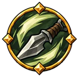 |
Рука метателя | Сила и ловкость | 5% увеличение скорости атаки при метании 7.5% уменьшение расход выносливости при метании |
Мечи¶
| Название | Ветвь | Эффект | |
|---|---|---|---|
| Алый росчерк | Интеллект и сила | 60% увеличение урона мечей при парировании недавно 10% увеличение урона кровотечения мечами |
|
| Борозда клинка | Интеллект и сила | 40% увеличение накопления недуга мечами | |
| Верность мечу | Интеллект и сила | 20% увеличение урона мечей 10% уменьшение расход выносливости мечей атаками |
|
| Зубчатая рана | Интеллект и сила | 20% увеличение урона мечей 40% увеличение накопления кровотечения мечами |
|
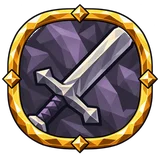 |
Песнь железа | Интеллект и сила | 20% увеличение урона мечей 15% увеличение скорости атаки мечей при парировании недавно +20% урона критических ударов мечей |
| Приговор ярла | Интеллект и сила | 30% увеличение шанса критического удара мечей +20% урона критических ударов мечей |
|
| Просвет в кольчуге | Интеллект и сила | 30% увеличение шанса критического удара мечей | |
| Рука дружинника | Интеллект и сила | 5% увеличение скорости атаки мечей 10% уменьшение расход выносливости мечей |
|
| Сталь в полоборота | Интеллект и сила | 5% увеличение скорости атаки мечей 30% увеличение шанса критического удара мечей |
Молния и шок¶
| Название | Ветвь | Эффект | |
|---|---|---|---|
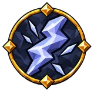 |
Белая вспышка | Интеллект | 37.5% увеличение урона от молнии при критическом попадании недавно |
| Гроза над водой | Интеллект | 40% увеличение накопления шока против мокрых целей | |
| Гром в камышах | Интеллект | 40% увеличение накопления шока против мокрых целей | |
| Громовой след | Интеллект | 15% увеличение урона от молнии 40% увеличение накопления шока |
|
| Долгое эхо грозы | Интеллект | 10% увеличение длительности шока | |
| Дрожь грозы | Интеллект | 40% увеличение накопления шока против мокрых целей | |
| Заряженная уязвимость | Интеллект | +25% к эффекту недуга шок | |
| Затяжной разряд | Интеллект | 10% увеличение длительности шока | |
| Копьё грозы | Интеллект | +12% пробивания сопротивлений от молнии | |
| Небесное жало | Интеллект | 40% увеличение накопления шока +25% к эффекту недуга шок |
|
| Остаточное напряжение | Интеллект | +5% damage over time multiplier от молнии | |
| Остаточный ток | Интеллект и сила | +5% damage over time multiplier от молнии | |
| Петля разряда | Интеллект | 40% увеличение накопления шока против мокрых целей 15% увеличение длительности шока против мокрых целей |
|
| Разряд над болотом | Интеллект | 20% увеличение урона от молнии против мокрых целей | |
| Рука громовержца | Интеллект | 15% увеличение урона от молнии |
Насыщение¶
| Название | Ветвь | Эффект | |
|---|---|---|---|
| В руках | Интеллект | 20% увеличение длительности эффектов для насыщения 15% увеличение силы для насыщения |
|
| Вбирая землю | Интеллект и сила | +10% к скорости поглощения для насыщения 15% увеличение силы для насыщения |
|
| Собранная суть | Интеллект | 15% увеличение силы для насыщения |
Натиск¶
| Название | Ветвь | Эффект | |
|---|---|---|---|
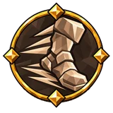 |
Гон победителя | Сила | +10% шанса натиска при убийстве 15% увеличение силы Натиска |
| Натиск дружины | Сила | +10% шанса натиска при убийстве 15% увеличение силы Натиска |
|
| Разгоревшаяся сеча | Ловкость | +10% шанса натиска при убийстве 15% увеличение силы Натиска |
Недуги¶
| Название | Ветвь | Эффект | |
|---|---|---|---|
| Долгая хворь | Ловкость и интеллект | 15% увеличение длительности недугов | |
| Затяжная гниль | Сила и ловкость | 40% увеличение накопления недуга | |
| Лёд и пламя | Ловкость и интеллект | 40% увеличение накопления недуга 15% увеличение урона от стихий |
|
| Первый след хвори | Ловкость | 40% увеличение накопления недуга против врагов с полным здоровьем | |
| Печать недуга | Ловкость и интеллект | 40% увеличение накопления недуга | |
| Ползучая порча | Интеллект | 40% увеличение накопления недуга | |
| Тяжёлый недуг | Ловкость и интеллект | 10% увеличение урона недугов | |
| Хворь последнего часа | Ловкость | 40% увеличение накопления недуга против врагов с низким здоровьем |
Ножи¶
| Название | Ветвь | Эффект | |
|---|---|---|---|
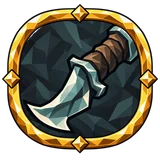 |
Змеиный порез | Ловкость и интеллект | 5% увеличение скорости атаки ножей 40% увеличение накопления отравления ножами |
| Клык в темноте | Ловкость и интеллект | +20% урона критических ударов ножей 30% увеличение урона скрытных атак ножей |
|
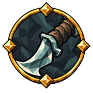 |
Короткая кромка | Ловкость и интеллект | 20% увеличение урона ножей 10% уменьшение расход выносливости ножей |
| Лезвие странника | Ловкость и интеллект | 20% увеличение урона ножей 10% уменьшение расход выносливости ножей |
|
| Лёгкий клинок | Ловкость и интеллект | 5% увеличение скорости атаки ножей | |
| Нож под ребром | Ловкость и интеллект | 30% увеличение шанса критического удара ножей +20% урона критических ударов ножей |
|
| След ножа | Ловкость и интеллект | 40% увеличение накопления недуга ножами | |
| Ухмылка плута | Ловкость и интеллект | 30% увеличение шанса критического удара ножей |
Ночь¶
| Название | Ветвь | Эффект | |
|---|---|---|---|
| Дозор при луне | Ловкость и интеллект | 30% увеличение брони ночью | |
| Дыхание сумерек | Ловкость | 20% увеличение регенерации выносливости ночью | |
| Нож полуночи | Ловкость и интеллект | +30% урона критических ударов ночью | |
| Покой под луной | Ловкость и интеллект | 30% увеличение регенерации здоровья ночью | |
| Покров чернолесья | Ловкость и интеллект | 40% увеличение скрытности ночью | |
| Спина в сумраке | Ловкость и интеллект | 30% увеличение урона скрытных атак | |
| Тень за плечом | Интеллект | 60% увеличение урона скрытных атак ночью | |
| Шаги между теней | Ловкость | 15% увеличение рейтинга уклонения ночью |
Обездвиживание¶
Область¶
| Название | Ветвь | Эффект | |
|---|---|---|---|
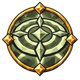 |
Дальние круги | Интеллект и сила | 10% увеличение области действия эффектов 15% увеличение урона по области |
| Долгое присутствие | Интеллект и сила | 15% увеличение длительности собственных усилений по области 10% увеличение области действия эффектов |
|
| Круг на равнине | Интеллект и сила | 10% увеличение области действия эффектов | |
| Мощь широкого удара | Интеллект и сила | 15% увеличение урона по области | |
| Простор заклинателя | Интеллект и сила | 10% увеличение области действия эффектов | |
| Размах живой силы | Интеллект и сила | 15% увеличение длительности собственных усилений по области 2.5% увеличение области действия эффектов за каждые 100 единиц максимума здоровья |
|
| Ржавый размах | Сила | 40% увеличение накопления разрушения брони 10% увеличение области действия эффектов атак |
|
| Широкий круг сечи | Интеллект и сила | 10% увеличение области действия эффектов |
Оглушение¶
| Название | Ветвь | Эффект | |
|---|---|---|---|
| Звон в черепе | Сила | 40% увеличение накопления оглушения | |
| Открытый висок | Сила и ловкость | 20% увеличение урона против оглушённых целей | |
| Павшая стойка | Сила | 20% увеличение урона против оглушённых целей | |
| Пошатнувшийся строй | Сила | 40% увеличение накопления оглушения 15% увеличение отбрасывания при оглушении цели недавно |
|
| Тяжесть тролля | Сила и ловкость | 40% увеличение накопления оглушения при нанесении урона типа «дробящий» | |
| Удар колокола | Сила | 80% увеличение накопления оглушения при блокировании недавно |
Огонь и горение¶
| Название | Ветвь | Эффект | |
|---|---|---|---|
| Алое зарево | Интеллект | 50% увеличение урона горения при критическом попадании недавно | |
| Всполох горна | Интеллект | 37.5% увеличение урона от огня при критическом попадании недавно | |
| Голодное пламя | Интеллект | 15% увеличение урона от огня | |
| Дыхание углей | Сила | 22.5% увеличение урона от огня on trinket activation недавно 15% физического урона как дополнительный урон огонь |
|
| Жар Сурта | Интеллект | +12% пробивания сопротивлений от огня | |
| Искра кострища | Интеллект | 15% увеличение урона от огня 40% увеличение накопления горения |
|
| Искра под кожей | Сила | 40% увеличение накопления горения | |
| На раскалённых углях | Сила | 20% увеличение урона против горящих целей | |
| Негаснущее пламя | Интеллект и сила | +5% damage over time multiplier от огня | |
| Огненный след | Интеллект | 15% увеличение урона от огня 40% увеличение накопления горения |
|
| Пламя пепельных земель | Сила | 15% увеличение урона от огня | |
| Пожар в жилах | Сила | 20% увеличение урона горения | |
| Последняя головня | Сила | 10% увеличение урона горения против врагов с низким здоровьем | |
| Рука у жаровни | Сила | 15% увеличение урона от огня | |
| Тлеющий след | Сила | 10% увеличение длительности горения | |
| Угли, что не гаснут | Сила | +5% damage over time multiplier от огня | |
| Укус огня | Сила | 40% увеличение накопления горения | |
| Цепкие угли | Сила и ловкость | +5% damage over time multiplier от огня |
Одноручное оружие¶
| Название | Ветвь | Эффект | |
|---|---|---|---|
| Лёгкая рукоять | Сила и ловкость | 10% уменьшение расход выносливости одноручного оружия атаками | |
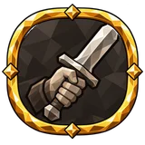 |
Правая рука ярла | Сила и ловкость | 15% увеличение урона одноручного оружия 30% увеличение шанса критического удара одноручного оружия |
| Свободный кулак | Сила и ловкость | 5% увеличение скорости атаки одноручного оружия 10% увеличение отбрасывания одноручного оружия |
|
| Сталь одной руки | Сила и ловкость | 30% увеличение урона одноручного оружия при уклонении недавно +20% урона критических ударов одноручного оружия |
Опыт и сохранение навыков¶
| Название | Ветвь | Эффект | |
|---|---|---|---|
| Память Хугина | Ловкость и интеллект | −10% потери опыта при смерти | |
| Слово Мунина | Ловкость и интеллект | 10% увеличение получаемого опыта |
Оружейные масла¶
| Название | Ветвь | Эффект | |
|---|---|---|---|
| Блеск победителя | Сила и ловкость | 60% увеличение weapon oil effect при убийстве недавно | |
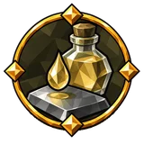 |
Блеск после сечи | Сила и ловкость | 30% увеличение weapon oil effect при последовательных попаданиях недавно |
| Верная пропитка | Сила и ловкость | 15% увеличение weapon oil effect 20% увеличение weapon oil duration |
|
| Долгая пропитка | Сила и ловкость | 40% увеличение weapon oil duration при последовательных попаданиях недавно | |
| Масло на острие | Сила и ловкость | 37.5% увеличение weapon oil effect при критическом попадании недавно | |
| Масло первого удара | Сила и ловкость | 22.5% увеличение weapon oil effect on primary attack hit недавно | |
| Масло последнего удара | Сила и ловкость | 30% увеличение weapon oil effect на Завершениях цепочки | |
| Память масла | Сила и ловкость | 60% увеличение weapon oil duration при парировании недавно | |
| Промасленная ладонь | Сила и ловкость | +10% к скорости нанесения масла | |
| Промасленная сталь | Сила и ловкость | 15% увеличение weapon oil effect | |
| Смазанная кромка | Сила и ловкость | 45% увеличение weapon oil effect при парировании недавно |
Отбрасывание¶
| Название | Ветвь | Эффект | |
|---|---|---|---|
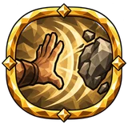 |
Напор великана | Сила | 15% увеличение отбрасывания on primary attack hit недавно |
| Прочь с дороги | Сила | 10% увеличение отбрасывания | |
| Расходящаяся земля | Сила | 10% увеличение slam отбрасывания |
Отражение¶
| Название | Ветвь | Эффект | |
|---|---|---|---|
| Зеркало клинка | Сила | +10% отражения |
Парирование¶
| Название | Ветвь | Эффект | |
|---|---|---|---|
| Вдох дуэлянта | Сила и ловкость | +15 выносливости при парировании | |
| Возвращённая стойка | Сила и ловкость | +10% к восстановлению от оглушения | |
| Искры на баклере | Сила и ловкость | 18.75% увеличение бонуса парирования при скользящем ударе недавно | |
| Короткий ответ | Сила и ловкость | +20% к восстановлению от оглушения при уклонении недавно | |
| Лёгкий обод | Сила и ловкость | 10% уменьшение buckler расход выносливости при блокировании | |
| Обод дуэлянта | Сила и ловкость | 12.5% увеличение бонуса парирования 12.5% увеличение buckler бонуса парирования от экипированного: щита |
|
| Руна встречного удара | Сила и ловкость | +18.75 эйтра при парировании | |
| Сила в пути | Сила и ловкость | 12.5% увеличение бонуса парирования |
передвижение¶
| Название | Ветвь | Эффект | |
|---|---|---|---|
| Лёгкая поступь | Ловкость | 5% увеличение скорости передвижения 1.5% увеличение скорости передвижения за каждые 5 единиц комфорт |
|
| Миг для погони | Ловкость | 12.5% увеличение скорости передвижения при критическом попадании недавно | |
| Путь до перевала | Сила и ловкость | 5% увеличение скорости передвижения | |
| Стезя скитальца | Ловкость | 5% увеличение скорости передвижения | |
| Шаг из-под удара | Ловкость | 10% увеличение скорости передвижения при пассивном уклонении недавно | |
| Шаг под руной | Ловкость и интеллект | 7.5% увеличение скорости передвижения при полном рунном щите | |
| Шаг после падения | Ловкость | 5% увеличение скорости передвижения при приземлении недавно |
Передвижение при блокировании¶
| Название | Ветвь | Эффект | |
|---|---|---|---|
| Поступь щитоносца | Сила | 7.5% увеличение скорости передвижения с поднятым щитом 5% уменьшение расход выносливости при блоке |
|
| Шагающий бастион | Сила | 7.5% увеличение скорости передвижения с поднятым щитом 5% уменьшение расход выносливости при блоке |
Перезарядка умений¶
| Название | Ветвь | Эффект | |
|---|---|---|---|
| Терпение норн | Сила и ловкость | 25% уменьшение перезарядки умений |
Переносимый вес¶
| Название | Ветвь | Эффект | |
|---|---|---|---|
| Бремя исполина | Сила | +30 грузоподъёмности +2.5% к сопротивлению отбрасыванию от основы за каждые 100 единиц максимального переносимого веса |
|
| Крепкие ремни | Сила | +30 грузоподъёмности | |
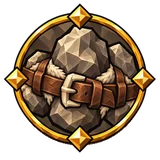 |
Мегингъёрд странника | Сила | +30 грузоподъёмности 2.5% уменьшение расход выносливости двуручного оружия атаками за каждые 100 единиц максимального переносимого веса |
| Плечи носильщика | Сила | +10% к максимальному переносимому весу | |
| Пояс великана | Сила | +30 грузоподъёмности +10% к максимальному переносимому весу +2.5% к сопротивлению отбрасыванию от основы за каждые 100 единиц максимального переносимого веса |
Питомцы¶
| Название | Ветвь | Эффект | |
|---|---|---|---|
| Клык верного зверя | Интеллект и сила | 20% увеличение урона for pets | |
| Кровь верного зверя | Интеллект и сила | 7.5% увеличение максимума здоровья for pets | |
| Шкура верного зверя | Интеллект и сила | 3.75% уменьшение получаемого урона for pets |
Плавание¶
| Название | Ветвь | Эффект | |
|---|---|---|---|
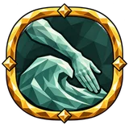 |
Сеча среди волн | Ловкость и интеллект | 5% уменьшение расход выносливости при плавании 22.5% увеличение урона в ближнем бою в воде |
Посохи¶
| Название | Ветвь | Эффект | |
|---|---|---|---|
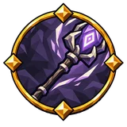 |
Бережный чародей | Интеллект | 10% уменьшение расхода эйтра посохов |
| Быстрое начертание | Интеллект | 5% увеличение скорости каста посохов 30% увеличение шанса критического удара посохов |
|
| Вершина посоха | Интеллект | +20% урона критических ударов посохов | |
| Взгляд руноведа | Интеллект | 30% увеличение шанса критического удара посохов +20% урона критических ударов посохов |
|
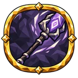 |
Жест заклинателя | Интеллект | 5% увеличение скорости каста посохов |
| Посох странствия | Интеллект | 20% увеличение урона посохов 10% уменьшение расход выносливости и эйтра посохов |
|
| Рунический отпечаток | Интеллект | 40% увеличение накопления недуга посохами | |
| Сучок чародея | Интеллект | 20% увеличение урона посохов 10% уменьшение расход выносливости и эйтра посохов |
|
| Хват волхва | Интеллект | 10% уменьшение расход выносливости и эйтра посохов 10% уменьшение расхода эйтра посохов |
Похищение¶
| Название | Ветвь | Эффект | |
|---|---|---|---|
| Алый след клинка | Сила и ловкость | +0.5% вампиризма | |
| Глоток чужой жизни | Сила и ловкость | +0.5% вампиризма +0.75 регенерации здоровья +10 здоровья при убийстве |
|
| Голодное заклятье | Интеллект | +1% вампиризма чар при низком эйтре +0.5% вампиризма чар |
|
| Жажда выжить | Интеллект и сила | +1% вампиризма при низком здоровье | |
| Кровавый мёд | Ловкость и интеллект | +0.5% вампиризма +0.5% вампиризма чар |
|
| Кровь за кровь | Сила и ловкость | +1.5% вампиризма при парировании недавно +2.25 регенерации здоровья при парировании недавно |
|
| Похищенная искра | Интеллект и сила | +0.5% eitr leech | |
| Руна голода | Интеллект | +0.5% вампиризма чар 20% увеличение регенерации эйтра +25 эйтра при убийстве |
Приспешники¶
| Название | Ветвь | Эффект | |
|---|---|---|---|
| Безжалостный слуга | Интеллект | +15% урона критических ударов for minions | |
| Воля призывателя | Интеллект | 20% увеличение урона for minions +25% модификаторов передаётся от основы for minions damage bonuses |
|
| Договор воинства | Интеллект и сила | 20% увеличение урона for minions 7.5% увеличение максимума здоровья for minions |
|
| Закалка призванных | Интеллект | −10% к длительности недугов на себе от основы for minions | |
| Зов воинства | Интеллект | +12% к эффективности удержания эйтра for minions | |
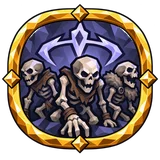 |
Кости под обетом | Интеллект | 7.5% увеличение максимума здоровья for minions 3.75% уменьшение получаемого урона for minions +25% модификаторов передаётся от основы for minions maximum health bonuses |
| Костяной остов | Интеллект | 7.5% увеличение максимума здоровья for minions | |
| Лёгкая ноша | Интеллект | +12% к эффективности удержания эйтра for minions | |
| Меткий слуга | Интеллект | 30% увеличение шанса критического удара for minions | |
| Оберег слуг | Интеллект | +7.5% к сопротивлению урону for minions | |
| Покров призывателя | Интеллект | 3.75% уменьшение получаемого урона for minions | |
| Прочный обет | Интеллект | +12% к эффективности удержания эйтра for minions | |
| Рвение воинства | Интеллект | 20% увеличение урона for minions 5% увеличение скорости атаки for minions |
|
| Страж у хозяина | Интеллект | 30% увеличение урона for minions рядом с хозяином |
Прокол¶
| Название | Ветвь | Эффект | |
|---|---|---|---|
| Глубокий прокол | Ловкость | 40% увеличение накопления прокола 20% увеличение урона прокола |
|
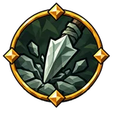 |
Засевшее острие | Ловкость | 10% увеличение длительности прокола |
| Шип под кожей | Сила | 40% увеличение накопления прокола шипами |
Прыжки¶
| Название | Ветвь | Эффект | |
|---|---|---|---|
| Последний скачок | Ловкость | 20% увеличение высоты прыжка при низкой выносливости | |
| Скачок оленя | Ловкость | 10% увеличение высоты прыжка 5% увеличение дальности прыжка |
|
| Снижение урона от падения | Ловкость | 7.5% уменьшение урона от падения |
Размеренное уклонение¶
| Название | Ветвь | Эффект | |
|---|---|---|---|
| Размеренная поступь | Ловкость | 10% уменьшение расхода при уклонении |
Разрушение брони¶
| Название | Ветвь | Эффект | |
|---|---|---|---|
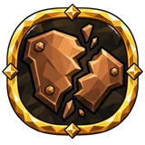 |
Крошево кольчуги | Сила | 40% увеличение накопления разрушения брони |
| Незатянутая брешь | Сила | 10% увеличение длительности разрушения брони | |
| Распоротый панцирь | Сила | +25% к эффекту недуга разрушение брони | |
| Удар в пролом | Сила и ловкость | 30% увеличение урона против врагов со сломанной бронёй | |
| Щель в царском панцире | Сила | 40% увеличение накопления разрушения брони против боссов |
Режущий урон¶
| Название | Ветвь | Эффект | |
|---|---|---|---|
| Рассекающий урон | Сила и ловкость | 15% увеличение рассекающего урона | |
| Рваная кромка | Сила и ловкость | 40% увеличение накопления кровотечения против движущихся целей |
Рунный щит¶
| Название | Ветвь | Эффект | |
|---|---|---|---|
| Венец руноведа | Интеллект | 12.5% увеличение рунного щита 12.5% увеличение рунного щита от экипированного: шлема |
|
| Знак на челе | Интеллект и сила | 12.5% увеличение восстановления рунного щита −25% к паузе перед перезарядкой рунного щита при блокировании недавно |
|
| Круг хранителя | Интеллект и сила | +20 рунного щита | |
| Мантия двергра | Интеллект | +20 рунного щита 12.5% увеличение рунного щита от экипированного: нагрудника |
|
| Начертание венца | Ловкость и интеллект | 12.5% увеличение восстановления рунного щита 12.5% увеличение рунного щита от экипированного: шлема 25% увеличение восстановления рунного щита при пассивном уклонении недавно |
|
| Оберег гальдра | Интеллект | 12.5% увеличение рунного щита +15 Интеллекта |
|
| Обновлённая руна | Ловкость и интеллект | 12.5% увеличение восстановления рунного щита −12.5% к паузе перед перезарядкой рунного щита |
|
| Руна на изломе | Интеллект и сила | −12.5% к паузе перед перезарядкой рунного щита +30% к эффекту лечения при низком рунном щите |
|
| Рунная подкладка | Интеллект и сила | +20 рунного щита 12.5% увеличение восстановления рунного щита on spell cast недавно |
|
| Рунная скорлупа | Интеллект | +20 рунного щита 12.5% увеличение восстановления рунного щита |
|
| Сомкнутый круг | Интеллект и сила | 12.5% увеличение рунного щита −12.5% к паузе перед перезарядкой рунного щита |
|
| Ткань заклинателя | Интеллект и сила | +20 рунного щита 12.5% увеличение рунного щита от экипированного: нагрудника |
|
| Тонкая грань руны | Интеллект и сила | +20 рунного щита | |
| Укрытие из знаков | Ловкость и интеллект | 12.5% увеличение рунного щита |
Связи с союзниками¶
| Название | Ветвь | Эффект | |
|---|---|---|---|
| Верность узам | Интеллект и сила | +1.25 с удержания связи | |
| Долгий обет | Интеллект и сила | +1.25 с удержания связи | |
| Кровь побратима | Интеллект и сила | +5% health regeneration shared with linked allies | |
| Круг побратимства | Интеллект и сила | +10% к области касания связи | |
| Нить бодрости | Интеллект и сила | +5% stamina regeneration shared with linked allies | |
| Нить жизни | Интеллект и сила | +5% health regeneration shared with linked allies | |
| Нить мудрости | Интеллект | +5% eitr regeneration shared with linked allies | |
| Общая рана | Интеллект и сила | +0.05 урона связанного союзника принимаете вы +10% к дальности связи |
|
| Протянутая нить | Интеллект и сила | +10% к дальности связи +5% health regeneration shared with linked allies |
|
| Рунная нить | Интеллект | +5% rune shield regeneration shared with linked allies | |
| Силы побратима | Интеллект и сила | +5% stamina regeneration shared with linked allies |
Серия атак¶
| Название | Ветвь | Эффект | |
|---|---|---|---|
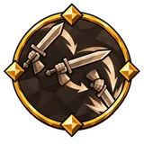 |
Звенья сечи | Сила и ловкость | 2.5% увеличение урона за каждый удар комбо +1 предела комбо |
| Сеча без паузы | Сила | 2.5% увеличение урона атак за каждый удар комбо 0.5% увеличение скорости атаки за каждый удар комбо +1 предела комбо |
силы¶
| Название | Ветвь | Эффект | |
|---|---|---|---|
| Глубокие запасы | Ловкость | 12.5% увеличение максимума выносливости |
Скипетры¶
| Название | Ветвь | Эффект | |
|---|---|---|---|
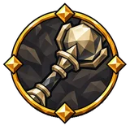 |
Взгляд законника | Интеллект и сила | 30% увеличение шанса критического удара скипетров |
| Взмах скипетра | Интеллект и сила | 5% увеличение скорости атаки скипетров 10% увеличение области действия эффектов скипетров 30% увеличение шанса критического удара скипетров |
|
| Жезл хранителя | Интеллект и сила | 20% увеличение урона скипетров 10% уменьшение расход выносливости и эйтра скипетров |
|
| Кара жреца | Интеллект и сила | +20% урона критических ударов скипетров | |
| Печать приговора | Интеллект и сила | +20% урона критических ударов скипетров | |
| Рука вардена | Интеллект и сила | 15% увеличение скорости атаки скипетров при парировании недавно | |
| Руна кары | Интеллект и сила | 40% увеличение накопления недуга скипетрами | |
| Скипетр в пыли | Интеллект и сила | 5% увеличение скорости атаки скипетров 20% увеличение урона скипетров |
|
| Хват руноведа | Интеллект и сила | 10% уменьшение расход выносливости и эйтра скипетров атаками +20% урона критических ударов скипетров |
Скользящие удары¶
| Название | Ветвь | Эффект | |
|---|---|---|---|
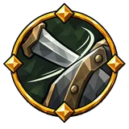 |
Искра на ободе | Сила и ловкость | +15% к снижению урона скользящим ударом при парировании недавно |
| Касание клинка | Сила и ловкость | +5% шанса скользящего удара | |
| Мягкий приём | Сила и ловкость | +5% к снижению урона скользящим ударом | |
| Поворот щита | Сила и ловкость | +5% шанса скользящего удара | |
| Скользящая сталь | Сила и ловкость | +5% шанса скользящего удара | |
| Урок шрама | Сила и ловкость | +10% к снижению урона скользящим ударом при получении удара недавно | |
| Уходящий удар | Сила и ловкость | +5% шанса скользящего удара | |
| Шаг мимо кромки | Сила и ловкость | +10% шанса скользящего удара при уклонении недавно |
Скользящий удар¶
| Название | Ветвь | Эффект | |
|---|---|---|---|
| Поворот лезвия | Ловкость | +5% шанса скользящего удара +5% к снижению урона скользящим ударом |
Скорость умений¶
| Название | Ветвь | Эффект | |
|---|---|---|---|
| Ловкие пальцы | Ловкость и интеллект | 5% увеличение скорости навыков |
Скрытность¶
| Название | Ветвь | Эффект | |
|---|---|---|---|
| Клинок за плечом | Ловкость и интеллект | 30% увеличение урона скрытных атак +25% урона критических ударов против не подозревающих об атаке целей |
|
| Клык незримого | Ловкость и интеллект | 30% увеличение урона скрытных атак 30% увеличение шанса критического удара против не подозревающих об атаке целей |
|
| Рана из сумрака | Ловкость и интеллект | 40% увеличение накопления недуга против не подозревающих об атаке целей | |
| Тихая тропа | Ловкость и интеллект | 10% уменьшение шума 5% уменьшение расход выносливости в скрытности |
Снаряды¶
| Название | Ветвь | Эффект | |
|---|---|---|---|
| Бережливый лучник | Ловкость | 20% шанс сберечь стрелу или болт при выстреле | |
| Бесконечный залп | Ловкость | +20% избыточный шанс выпустить дополнительный снаряд | |
| Верный выстрел | Ловкость | 30% увеличение шанса критического удара стрельбы | |
| Верный полёт | Ловкость | 20% увеличение скорости снарядов | |
| Взгляд дозорного | Ловкость | 15% увеличение урона в дальнем бою | |
| Глаз за оперением | Ловкость и интеллект | 30% увеличение шанса критического удара снарядов | |
| Глаз над равниной | Ловкость | 30% увеличение шанса критического удара в дальнем бою | |
| Движущая сила | Ловкость | 15% увеличение урона снарядов | |
| Ещё один снаряд | Сила и ловкость | +20% избыточный шанс выпустить дополнительный снаряд | |
| За горизонтом | Ловкость и интеллект | 30% увеличение шанса критического удара снарядов против дальних врагов | |
| За дальним рубежом | Ловкость | 20% увеличение урона в дальнем бою против дальних врагов | |
| Малый попутный ветер | Ловкость | 10% увеличение скорости снарядов 50% прибавки скорости снарядов добавляется к урону снарядами |
|
| Небесный залп | Сила и ловкость | 15% увеличение урона снарядов | |
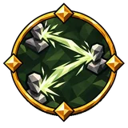 |
Неразрывная цепь | Ловкость | +20% избыточный шанс перескочить по цепи ещё раз |
| Полёт ястреба | Ловкость | 15% увеличение урона снарядов | |
| Путь сквозь камни | Ловкость и интеллект | 10% увеличение скорости снарядов 15% увеличение урона снарядов +1 отскоков |
|
| Расходящиеся тропы | Ловкость | +20% избыточный шанс перескочить по цепи ещё раз +20% избыточный шанс выпустить дополнительный снаряд |
|
| Расщеплённый полёт | Ловкость | +20% избыточный шанс перескочить по цепи ещё раз +20% избыточный шанс выпустить дополнительный снаряд |
|
| Роковой полёт | Ловкость и интеллект | +20% урона критических ударов снарядов | |
| Рука стрелка | Ловкость | 15% увеличение урона стрельбы | |
| Сквозь вражий строй | Ловкость | 10% увеличение скорости снарядов +1 числа целей, которые пронзает болт арбалета |
Сокрушения¶
| Название | Ветвь | Эффект | |
|---|---|---|---|
| Вдох перед расколом | Сила | 5% уменьшение slam расход выносливости | |
| Гул под ногами | Сила | 5% уменьшение slam расход выносливости 15% увеличение slam отбрасывания при оглушении цели недавно |
|
| Земля содрогнётся | Сила | 40% увеличение накопления оглушения with slams | |
| Круг расколотой земли | Сила | 15% увеличение slam отбрасывания при оглушении цели with slams недавно 10% увеличение slam области действия эффектов |
|
| Молот долины | Сила | 10% увеличение slam области действия эффектов 5% уменьшение slam расход выносливости |
|
| Отзвук исполина | Сила | 10% увеличение slam отбрасывания 10% увеличение slam области действия эффектов |
|
| Поступь йотуна | Сила | 10% увеличение slam области действия эффектов 10% увеличение slam отбрасывания |
|
| Размах старого бойца | Сила | 15% увеличение области действия эффектов on primary attack hit недавно | |
| Раскол равнины | Сила | 10% увеличение slam области действия эффектов | |
| Рябь камня | Сила | 2.5% увеличение slam области действия эффектов за каждые 5 единиц м высоты падения | |
| Стойка землетрясения | Сила | 10% уменьшение slam расход выносливости при блокировании недавно |
Сопротивление влажности¶
| Название | Ветвь | Эффект | |
|---|---|---|---|
| Плащ дождевого дозора | Интеллект и сила | +15% стойкости к сырости |
Сопротивление недугам¶
| Название | Ветвь | Эффект | |
|---|---|---|---|
| Болотная выучка | Сила и ловкость | −10% к длительности недугов на себе от основы отравление | |
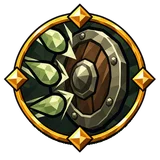 |
Глоток против хвори | Интеллект и сила | −15% к длительности недугов на себе от основы on drinking a mead недавно |
| Горькое противоядие | Сила и ловкость | −10% к длительности недугов на себе от основы отравление | |
| Железное здоровье | Ловкость | −10% к длительности недугов на себе | |
| Зелёная закалка | Сила и ловкость | −20% к длительности недугов на себе от основы отравление при уклонении недавно | |
| Кожа болотника | Сила и ловкость | −10% к длительности недугов на себе от основы отравление | |
| Крепкая кровь | Интеллект и сила | −10% к длительности недугов на себе от основы | |
| Пепельная закалка | Сила и ловкость | −10% к длительности недугов на себе от основы горение | |
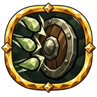 |
Плоть севера | Интеллект и сила | −10% к длительности недугов на себе от основы |
| Привычка к пламени | Интеллект и сила | −20% к длительности недугов на себе от основы при получении поджога недавно | |
| Соль болот | Сила и ловкость | −10% к длительности недугов на себе от основы отравление | |
| Тролья кровь | Интеллект | −10% к длительности недугов на себе | |
| Упрямая плоть | Интеллект и сила | −10% к длительности недугов на себе от основы | |
| Урок потрясения | Интеллект и сила | −30% к длительности недугов на себе от основы при получении оглушения недавно | |
| Шкура у костра | Сила и ловкость | −12.5% к длительности недугов на себе от основы горение в движении |
Сопротивление отбрасыванию¶
| Название | Ветвь | Эффект | |
|---|---|---|---|
| Вес старой горы | Сила | +2.5% к сопротивлению отбрасыванию от основы за каждые 100 единиц максимального переносимого веса | |
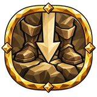 |
Вросший камень | Сила | +10% к сопротивлению отбрасыванию от основы |
| Пятки в землю | Сила | +20% к сопротивлению отбрасыванию от основы при блокировании недавно |
Сопротивления урону¶
| Название | Ветвь | Эффект | |
|---|---|---|---|
| Горечь болот | Ловкость и интеллект | +7.5% resistance от яда | |
| Дублёная душа | Ловкость | +7.5% resistance от стихий | |
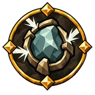 |
Закалка дождями | Интеллект | +15% стойкости к сырости +7.5% resistance от стихий |
| Закалка четырёх ветров | Интеллект | +7.5% resistance от стихий | |
| Знак стойкого тела | Интеллект и сила | +7.5% resistance от стихий | |
| Кожа в искрах | Интеллект и сила | +20% сопротивления взрывам | |
| Кожа странника | Ловкость | +7.5% resistance от стихий | |
| Круг стихий | Интеллект | +7.5% resistance от стихий | |
| Оберег от мёртвых | Интеллект и сила | +7.5% resistance от духа | |
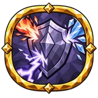 |
Оберег перевалов | Интеллект | +7.5% resistance от стихий |
| Плащ горной стужи | Интеллект и сила | +7.5% стойкости к холоду |
Споры¶
| Название | Ветвь | Эффект | |
|---|---|---|---|
| Болотный сад | Ловкость и интеллект | +2 spore предела | |
| Долгое цветение | Ловкость и интеллект | 20% увеличение длительности недугов и усилений for spores | |
| Дыхание спор | Ловкость и интеллект | 10% увеличение области действия эффектов for spores | |
| Цветение топи | Ловкость и интеллект | +2 spore предела |
Спутники¶
| Название | Ветвь | Эффект | |
|---|---|---|---|
| Верный спутник | Интеллект и сила | 20% увеличение урона for your companion | |
| Жизнь соратника | Интеллект и сила | 7.5% увеличение максимума здоровья for your companion +25% модификаторов передаётся от основы for your companion maximum health bonuses |
|
| Кираса соратника | Интеллект и сила | 3.75% уменьшение получаемого урона for your companion +10 брони for your companion за каждые 100 единиц текущей брони |
|
| Общая сеча | Интеллект и сила | 20% увеличение урона for your companion +25% модификаторов передаётся от основы for your companion damage bonuses |
|
| Одна дорога | Интеллект и сила | 20% увеличение урона for your companion 2.5% увеличение регенерации здоровья for your companion за каждые 10 единиц комфорт |
|
| Победа плечом к плечу | Интеллект и сила | 80% увеличение урона for your companion при убийстве недавно | |
| Сытый соратник | Интеллект и сила | 30% увеличение урона for your companion пока питомец сыт |
Стихийные недуги¶
| Название | Ветвь | Эффект | |
|---|---|---|---|
| Затяжные недуги | Интеллект | 40% увеличение накопления горения обморожение шок 15% увеличение длительности горения обморожение шок |
|
| Слияние | Интеллект | 25% увеличение урона за каждый стихийный недуг на цели | |
| Сходящиеся недуги | Интеллект | 20% увеличение урона против врагов со стихийным недугом 40% увеличение накопления горения обморожение шок |
Стихийный урон¶
| Название | Ветвь | Эффект | |
|---|---|---|---|
| Гнев Муспелля | Интеллект | 30% увеличение урона от стихий |
Стойкость¶
| Название | Ветвь | Эффект | |
|---|---|---|---|
| Запас стойкости | Сила | +1 к порогу стойкости за каждые 10 единиц максимума здоровья | |
| Камень в груди | Сила | +5% к стойкости | |
| Обет щитоносца | Сила | +12.5 к порогу стойкости +7.5% к стойкости с поднятым щитом |
|
| Последняя крепость | Сила | +12.5 к порогу стойкости | |
| Стойкость кулачника | Ловкость | +5% к стойкости | |
| Тяжесть пережитого | Интеллект и сила | +5% к стойкости | |
| Упрямство скалы | Сила | +12.5 к порогу стойкости |
Стылая земля¶
| Название | Ветвь | Эффект | |
|---|---|---|---|
| Длань зимы | Интеллект | 40% увеличение накопления обморожения эффектами земли | |
| Застывшая память | Интеллект | 20% увеличение урона от холода эффектами земли | |
| Скованный стеклом | Интеллект | 10% увеличение области действия эффектов от холода эффектами земли 15% уменьшение расхода на стылой земле Заклинания создают землю при попадании в поверхность при нанесении урона типа «холод» |
Топоры¶
| Название | Ветвь | Эффект | |
|---|---|---|---|
| Обух налётчика | Сила и ловкость | 30% увеличение шанса критического удара топоров 40% увеличение накопления оглушения топорами |
|
| Окровавленная кромка | Сила и ловкость | 40% увеличение накопления недуга топорами | |
| Пляска топора | Сила и ловкость | 5% увеличение скорости атаки топоров | |
| Последняя зарубка | Сила и ловкость | 40% увеличение накопления кровотечения топорами +20% урона критических ударов топоров |
|
| Рука лесоруба | Сила и ловкость | 5% увеличение скорости атаки топоров 10% уменьшение расход выносливости топоров |
|
| Секира налётчика | Сила и ловкость | 20% увеличение урона топоров 10% уменьшение расход выносливости топоров |
|
| Секира ярла | Сила и ловкость | 30% увеличение шанса критического удара топоров +20% урона критических ударов топоров |
|
| Укус секиры | Сила и ловкость | 20% увеличение урона топоров 40% увеличение накопления кровотечения топорами |
Удары¶
| Название | Ветвь | Эффект | |
|---|---|---|---|
| Многорукая сеча | Интеллект и сила | 15% увеличение урона страйка +1 дополнительных страйков |
|
| Эхо клинка | Интеллект и сила | 15% увеличение урона страйка +1 дополнительных страйков |
Уклонение¶
| Название | Ветвь | Эффект | |
|---|---|---|---|
| Изящное отступление | Ловкость | +10% шанса скользящего удара при пассивном уклонении недавно | |
| Капюшон скитальца | Сила и ловкость | 7.5% увеличение рейтинга уклонения 30% увеличение рейтинга уклонения от экипированного: шлема |
|
| Кожа следопыта | Ловкость | 7.5% увеличение рейтинга уклонения 22.5% увеличение рейтинга уклонения от экипированного: нагрудника |
|
| Лисий шаг | Ловкость | 7.5% увеличение рейтинга уклонения 5% увеличение скорости передвижения +15 Ловкости |
|
| Неуловимая поступь | Ловкость | 7.5% увеличение рейтинга уклонения | |
| Плащ охотника | Сила и ловкость | 7.5% увеличение рейтинга уклонения 45% увеличение рейтинга уклонения от экипированного: нагрудника при уклонении недавно |
|
| Уклонение без усилий | Ловкость | 10% уменьшение расхода при уклонении | |
| Ускользающая тень | Сила и ловкость | 7.5% увеличение рейтинга уклонения | |
| Ускользающий знак | Ловкость | 7.5% увеличение рейтинга уклонения 20% увеличение регенерации выносливости при пассивном уклонении недавно |
|
| Шаг сквозь траву | Сила и ловкость | 9.375% увеличение рейтинга уклонения в движении 22.5% увеличение рейтинга уклонения от экипированного: поножей |
Уклонение без усилий¶
| Название | Ветвь | Эффект | |
|---|---|---|---|
| Шаг пера | Ловкость | 10% шанс уклониться без расхода выносливости |
Уклонение и рунный щит¶
| Название | Ветвь | Эффект | |
|---|---|---|---|
| Призрачное облачение | Ловкость и интеллект | 22.5% увеличение рейтинга уклонения от экипированного: нагрудника 12.5% увеличение рунного щита от экипированного: нагрудника |
|
| Тень за руной | Ловкость и интеллект | 7.5% увеличение рейтинга уклонения 12.5% увеличение рунного щита −12.5% к паузе перед перезарядкой рунного щита |
|
| Туманный покров | Ловкость и интеллект | 7.5% увеличение рейтинга уклонения 12.5% увеличение рунного щита |
|
| Уклонение и рунный щит | Ловкость и интеллект | 7.5% увеличение рейтинга уклонения 12.5% увеличение рунного щита |
|
| Ясный покров | Ловкость и интеллект | −18.75% к паузе перед перезарядкой рунного щита при полном эйтре |
урон¶
| Название | Ветвь | Эффект | |
|---|---|---|---|
| Пир ночного зверя | Ловкость и интеллект | 40% увеличение урона ночью |
Урон духом¶
| Название | Ветвь | Эффект | |
|---|---|---|---|
| Дух заклинания | Интеллект | 15% увеличение урона от духа 15% физического урона как дополнительный урон дух |
|
| Дух и заклинание | Интеллект | 15% увеличение урона от духа 15% увеличение урона чар |
|
| Песнь заклинания | Интеллект | 15% увеличение урона от духа |
Ускользающая защита¶
| Название | Ветвь | Эффект | |
|---|---|---|---|
| Ускользающая защита | Ловкость | 7.5% увеличение рейтинга уклонения +10% шанса скользящего удара при пассивном уклонении недавно |
Устойчивость¶
| Название | Ветвь | Эффект | |
|---|---|---|---|
| Возвращение в строй | Сила | +10% к восстановлению от оглушения | |
| Горная выправка | Сила | +10% устойчивости к оглушению | |
| Крепкая шея | Сила | +10% устойчивости к оглушению | |
| Поступь странника | Сила | +20% устойчивости к оглушению 18.75% увеличение регенерации здоровья в движении |
|
| Устойчивая поступь | Сила | +12.5% устойчивости к оглушению в движении |
Факелы¶
| Название | Ветвь | Эффект | |
|---|---|---|---|
| Головня в кулаке | Сила | 15% увеличение урона в ближнем бою |
Фантомные удары¶
| Название | Ветвь | Эффект | |
|---|---|---|---|
| Вторая тень | Ловкость | +10% Phantom strike chance +20% Phantom strike crit damage |
|
| Мимолётный двойник | Ловкость | +10% Phantom strike chance | |
| Невесомый молот | Ловкость | 25% увеличение Phantom strike stagger build-up | |
| Незримый палач | Ловкость | 30% увеличение Phantom strike crit chance +20% Phantom strike crit damage |
|
| Отголоски ударов | Ловкость | +10% Phantom strike chance | |
| Разящий призрак | Ловкость | +10% Phantom strike chance 30% увеличение Phantom strike crit chance |
Фортификация¶
| Название | Ветвь | Эффект | |
|---|---|---|---|
| Каменная стойка | Сила | +5 максимума фортификации +10% к эффекту фортификации |
|
| Корни щитоносца | Сила | +5 максимума фортификации +10% к эффекту фортификации |
Холод и обморожение¶
| Название | Ветвь | Эффект | |
|---|---|---|---|
| Долгий иней | Ловкость | +5% damage over time multiplier от холода | |
| Дыхание метели | Интеллект | 40% увеличение накопления обморожения против мокрых целей | |
| Зима без конца | Ловкость | +5% damage over time multiplier от холода | |
| Иней на ране | Интеллект | 40% увеличение накопления обморожения против мокрых целей | |
| Морозная хватка | Ловкость | 10% увеличение длительности обморожения 20% увеличение эффекта обморожения |
|
| Острие стужи | Ловкость | +12% пробивания сопротивлений от холода | |
| Раскол льдины | Ловкость | 20% увеличение урона против замороженных целей 15% физического урона как дополнительный урон холод |
|
| Сердце ледника | Интеллект | 15% увеличение урона от холода | |
| Синий сумрак | Ловкость | 37.5% увеличение урона от холода при критическом попадании недавно | |
| Стеклянный мороз | Интеллект | 20% увеличение урона от холода против замороженных целей 40% увеличение накопления обморожения против замороженных целей |
|
| Холод в суставах | Ловкость | 40% увеличение накопления обморожения против движущихся целей |
Шипы¶
| Название | Ветвь | Эффект | |
|---|---|---|---|
| Железный терновник | Сила | +0.0625 шипов за каждые 20 единиц текущей брони | |
| Кованые шипы | Сила | +10 шипов | |
| Колючий панцирь | Сила | 20% увеличение шипов | |
| Толчок тяжёлой стали | Сила и ловкость | 20% увеличение шипов +15 шипов с поднятым щитом |
|
| Шипы на кирасе | Сила | +10 шипов +0.0625 шипов за каждую единицу брони надетого нагрудника |
Эйтр¶
| Название | Ветвь | Эффект | |
|---|---|---|---|
| Глоток мудрости | Интеллект | +12.5 эйтра при блокировании +18.75 эйтра при поджоге |
|
| Глубокий эйтр | Интеллект | 10% уменьшение расхода эйтра 12.5% увеличение максимума эйтра |
|
| Источник Мимира | Интеллект | 20% увеличение регенерации эйтра | |
| На исходе чар | Интеллект и сила | 10% увеличение скорости атаки при низком эйтре | |
| Полнота знания | Интеллект и сила | 15% увеличение области действия эффектов если начато при полном эйтре | |
| Последняя искра | Интеллект | 80% увеличение накопления недуга при низком эйтре | |
| Скрытый источник | Интеллект и сила | 20% увеличение регенерации эйтра | |
| Сосуд ворона | Ловкость и интеллект | +12.5 максимума эйтра +1.25 максимума эйтра за каждую единицу рунного щита надетого шлема |
|
| Шёпот звёзд | Интеллект | 40% увеличение регенерации эйтра ночью 20% увеличение регенерации эйтра от экипированного: брони |
|
| Эйтр | Ловкость и интеллект | +12.5 максимума эйтра | |
| Эйтр | Интеллект и сила | 15% увеличение области действия эффектов если начато при полном эйтре | |
| Ясная мысль | Интеллект | 22.5% увеличение брони при полном эйтре |
Эйтр и рунный щит¶
| Название | Ветвь | Эффект | |
|---|---|---|---|
| Плащ рунной вязи | Ловкость и интеллект | 20% увеличение регенерации эйтра 7.5% увеличение рейтинга уклонения 12.5% увеличение рунного щита +8 Ловкости +8 Интеллекта |
|
| Сосуд хранителя | Интеллект и сила | +12.5 максимума эйтра 12.5% увеличение рунного щита |
|
| Течение рун | Интеллект и сила | 20% увеличение регенерации эйтра | |
| Эйтровый оплот | Интеллект | 12.5% увеличение максимума эйтра 12.5% увеличение рунного щита |
Экипировка и аксессуары¶
| Название | Ветвь | Эффект | |
|---|---|---|---|
| Ноша скитальца | Интеллект и сила | +15% лёгкости снаряжения | |
| Оберег хранителя | Интеллект и сила | 15% увеличение defensive accessory affix effect 15% увеличение resource and recovery accessory affix effect |
|
| Острие талисмана | Ловкость и интеллект | 15% увеличение offensive accessory affix effect |
Эффекты земли¶
| Название | Ветвь | Эффект | |
|---|---|---|---|
| Беспокойная земля | Интеллект | 40% увеличение земли накопления 25% увеличение земли ailment effect |
|
| Рунный круг | Интеллект | 10% увеличение земли области действия эффектов 20% увеличение земли длительности эффектов +2 земли предела |
Яд и отравление¶
| Название | Ветвь | Эффект | |
|---|---|---|---|
| Глубокий яд | Ловкость и интеллект | +5% damage over time multiplier от яда | |
| Густеющий яд | Ловкость и интеллект | +5% damage over time multiplier от яда | |
| Жало чащи | Ловкость и интеллект | 15% увеличение урона от яда 20% увеличение накопления отравления 20% увеличение урона со временем отравления |
|
| Зелёное острие | Ловкость и интеллект | +12% пробивания сопротивлений от яда | |
| Змеиная примесь | Ловкость и интеллект | 15% физического урона как дополнительный урон яд | |
| Медленное увядание | Ловкость и интеллект | 10% увеличение длительности отравления | |
| Пир болотника | Ловкость и интеллект | 20% увеличение урона против отравленных целей | |
| Последний яд | Ловкость и интеллект | 10% увеличение урона со временем отравления против врагов с низким здоровьем | |
| Терпеливая отрава | Ловкость и интеллект | +5% damage over time multiplier от яда | |
| Укус топи | Ловкость и интеллект | 20% увеличение накопления отравления 20% увеличение урона со временем отравления |
Ядовитая земля¶
| Название | Ветвь | Эффект | |
|---|---|---|---|
| Гнилая почва | Ловкость и интеллект | 20% увеличение урона от яда эффектами земли 30% увеличение урона со временем отравления на ядовитой земле Заклинания создают землю при попадании в поверхность при нанесении урона типа «яд» |
|
| Ядовитый охват | Ловкость и интеллект | 10% увеличение области действия эффектов от яда эффектами земли |
Ярость¶
| Название | Ветвь | Эффект | |
|---|---|---|---|
| Гнев берсерка | Сила | +5 максимума ярости +10% к эффекту ярости |
|
| Удержанный гнев | Сила | −10% к скорости потери ярости +1.25 с задержки потери ярости |
Не реализовано (199)¶
Узлы из файлов игры, которые пока ничего не дают (заглушки или работа в процессе)
Данные из Path of Valheiman 5.3.6, извлечены 2026-10-27.